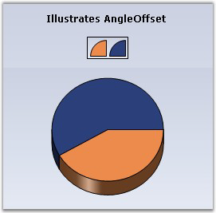
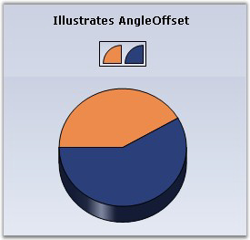
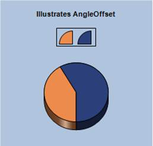

The following are the offset angle that can be used when rendering Pie charts:
|
Details | |
|
Possible Values |
Accepts real values like 45f, 90f etc.* |
|
Default Value |
0 |
|
2D / 3D Limitations |
No |
|
Applies to Chart Element |
All Series |
|
Applies to Chart Types |
PieChart |
 In Essential Chart for
ASP.NET, the entire pie chart circle is considered as 90 degree. To set the
AngleOffset value, divide the entire circle into 4, i.e. divide 360 degrees by
4.
In Essential Chart for
ASP.NET, the entire pie chart circle is considered as 90 degree. To set the
AngleOffset value, divide the entire circle into 4, i.e. divide 360 degrees by
4.
The following code illustrates how to set the AngleOffset for pie chart, by manually calculating the angle:
|
[C#]
// Create chart series and add data points. ChartSeries series1 = this.chartControl1.Model.NewSeries("Market"); series1.Points.Add(0, 20); series1.Points.Add(1, 28); series1.Type = ChartSeriesType.Pie; // Add the series to the chart series collection. this.chartControl1.Series.Add(series1);
this.chartControl1.Series3D = true; this.chartControl1.Series[0].ConfigItems.PieItem.AngleOffset = 45f; |
|
[VB.NET]
'Create chart series and add data points. Private series1 As ChartSeries = Me.chartControl1.Model.NewSeries("Market") series1.Points.Add(0, 20) series1.Points.Add(1, 28) series1.Type = ChartSeriesType.Pie 'Add the series to the chart series collection. Me.chartControl1.Series.Add(series1)
Me.chartControl1.Series3D = True Me.chartControl1.Series(0).ConfigItems.PieItem.AngleOffset = 45f |

Figure 1: PieChart with No AngleOffset

Figure 2: PieChart with AngleOffset = "45f"
You can also set the calculation in the code as given in the following example:
|
[C#]
this.chartControl1.Series[0].ConfigItems.PieItem.AngleOffset = 90 / 4f; |
|
[VB] Me.chartControl1.Series(0).ConfigItems.PieItem.AngleOffset = 90/4f
|

Figure 3: PieChart with AngleOffset = "90/4f"
See Also